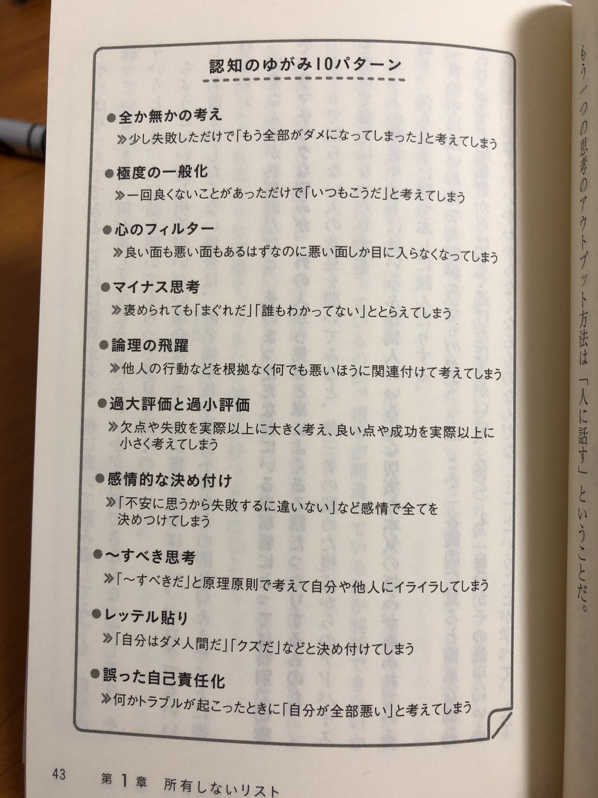

忘れたくない概念
November 23, 2019
健康
- 体の不調は自身の内面を映し出している。
- 腸は脳と密接に関係している。日々の食事に気をつけよう。 - 避けたいもの: 白砂糖、リノール酸、マーガリン、食品添加物
ビジネス
- 「失敗したくて、失敗する人はいない。だから、失敗したくても出来ないような仕組みを作り続けていこう」
- 一勝九敗が当たり前
- 引き寄せの法則は継続を実践するためのもの。魔法のツールではない。好きなことは誰でも続けていける。それが成功につながることなら良い。だが、もし成功したいと考えていて成功につながらないものだけが好きなら、引き寄せの法則を行い成功に必要な好きでない苦しい作業を継続出来るようにしていく。また、願望を具体的にイメージすることにより、現状との差異を意識することで努力の下限値を上げることも出来る。
- 量は質に変わる。完璧主義をやめ継続していくことが大事。回数が多い分だけPDCAサイクルを回すことができる。
- 負けの99%は自身の未熟による自滅。
- 失敗は失敗にあらず。上手くいかない方法を学んだだけ。同じ失敗を繰り返すことが失敗。
- 前提として夢を叶えるにはつらいことや苦しいことは避けられない。
- 金を得るとは人の欲(喜ばせ幸せにする)を満たすこと。
生き方
- 才能がないからと言う人は才能が無いんじゃなくて才能を育てる気力が無いだけ。
- 「自分はこう生きたい、こうある時が幸せ」というのを定義することが大前提。本音の欲求がはっきりすれば物事を継続していく種となる。わからないならいろんなことに挑戦してわかるまで見つける作業を諦めない。日勤、夜勤を体験してみたり、知的労働から単純肉体労働を経験したり、いろんな人と会ったり、旅をしたり、本を読んだり等。
- 何事も価値があり力のあるものは「継続」
- 人は鏡。問題があるとすればそれを問題と捉えている自身の考え方が問題。問題が起きるとき、必ず自身にも何かしらの責任がある。(怠惰や傲慢など)
- 僕は内向型であることを自覚し、内向型ならではの強みと弱みを理解し生きていこう。
- 誰かと衝突したら憎むのではなく「ありがとう、愛してる」と相手に対し唱え考えるようにする。相手の念や相手に対する自身の感情を癒すことでわだかまりが消える。
- 恐怖や困難、不安などのマイナスの感情の先にこそ価値(生きる喜び)あるものが存在する。
- 誰かに勝とうとするのではなく負けないように努力する。
- お金は本当に自身に必要なもののみに使う。2週間経っても欲しい必要と思えるなら買おう。
- 自身のプラスの感情もマイナスの感情も呼吸と体の反応に集中してただただ静観することで執着が消え、感情/思考に振り回されなくなっていく。
- 逆風こそ順風。逆風だからこそ力を出しきり多くを学ぶことができる。
- 凄い人は凄い、賢い人は賢い。自分は自分。今の自分は過去の自分が作ったのだから他人と比較せずに自身の責任をおい、自分の幸せに向け必要なことをコツコツ積み重ねていくだけ。
真理(現状での。)
- 諸行無常(色即是空) - 人(自身含む)も物も全ては変わっていく。変わっていくのが当たり前で、変わらないことに固執すれば辛いだけ。
- ニーバーの祈り - 事象に対する態度。変わらないものを変えようとしても苦しいだけ。見極めて変えられるところ(自身の考え方や環境など)を変えていこう。
- アドラー心理学 - 人は原因論ではなく目的論で生きている。人は見たいように物事(人や事象)を見ている。
スピリチュアル
- 人は現世に各自の「ある課題」を乗り越えるために生まれてきている。
- 全ては振動している。それは物質、精神ともにという意味合いで。波長が合えば引き寄せ合う。
- 全ては振動しているため真言などの良い言霊を唱えればその波長に自身を合わすことができる。(光明真言、ソルフェジオ周波数)
- 僕の今世で乗り越えるべきは怠惰、傲慢。
- ヴィパッサナー瞑想について - https://jp.dhamma.org/ja/reference/the-art-of-living/
その他
- 知なき愛は愛にあらず
- 母親、ひいては女性を大事にしよう。人は輪廻転生を繰り返し、己の業を克服し魂のレベルをあげていくのが目的(業を克服し、欲への執着をなくした仏陀は輪廻の輪から離脱した。)。その際、魂のレベルを上げるには物質世界である現世に生まれなければいけない。生まれるためには母親が必要である。母親は物凄い痛みに耐え、生んでくれ、愛情をもって育ててくれた。これに感謝せずにいられるだろうか？大事にしないでいられるだろうか？
- 職業に貴賤はない。人はコンテキストによって良くも悪くもなる。その人自身の本質に関わらず評価などは変わる。そこで大事になるのは、そのコンテキスト下でいかに自身の力を精一杯出し貢献するかである。そして、そのコンテキストを決める要因となる学力やスキル、人間関係などはすべて縁によって育まれている。その人自身の努力もあるが、そうでない部分もまたある。そこで、コンテキストに着目するのではなく、あくまでもおかれた環境でどう行動しているか？だけが判断基準となる。
- 明鏡止水の心持ちであれば万事いかなる時も問題ないでしょう。
- 旅とは新しい景色を求めるのではなく、新しい物の見方を手に入れること。
- ヘブライ聖書の通り、テクノロジーがいかに進化し社会構造がどんなに変わっても人間の本質は変わらない。
- 万事良悪の2面性を十分に含んでいる。正しいことなど一つもない。絶対など絶対ない。
- 認知のゆがみ10パターン
